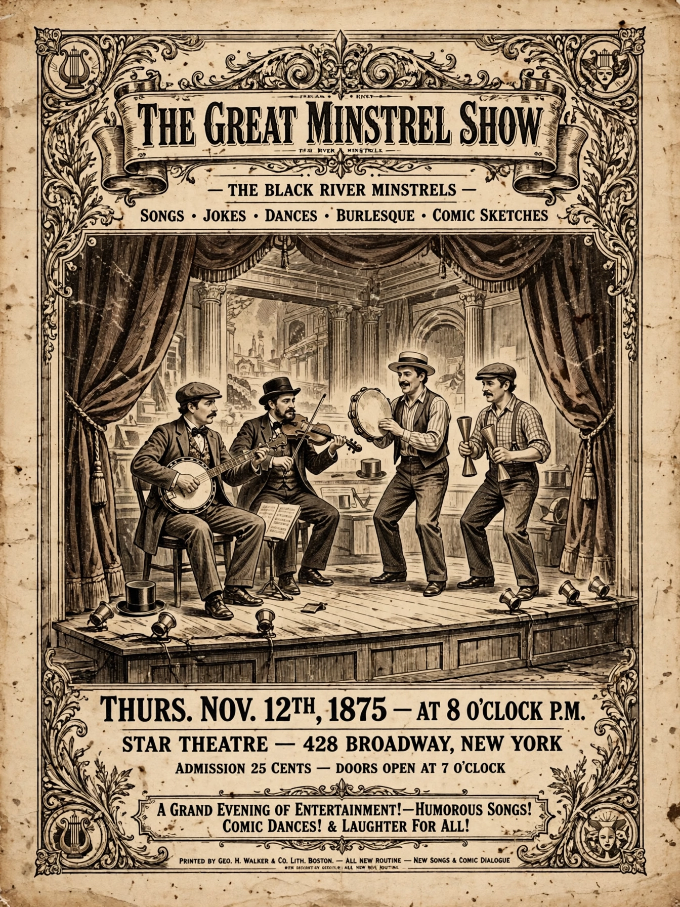

The minstrel show, or minstrelsy, was an American form of racist entertainment developed in the 19th century, in which performers — usually white, in blackface — enacted comic skits, dances and music caricaturing Black people as lazy, buffoonish, superstitious and happy in slavery. Minstrelsy was the first distinctly American theatrical form and dominated popular entertainment from the 1840s to the late 19th century, leaving a lasting and contested imprint on American music and culture.

| Origin | United States, c. 1830s |
|---|---|
| Peak | 1840s–1890s |
| Key figures | T. D. Rice, Stephen Foster, Christy's Minstrels |
Thomas Dartmouth Rice's "Jump Jim Crow" routine (c. 1830) launched blackface performance; full-evening troupe shows followed with the Virginia Minstrels (1843) and E. P. Christy's troupe. Songwriter Stephen Foster wrote many of his famous songs for minstrel troupes. Stock characters included the dandy Zip Coon and the shuffling Jim Crow — whose name later labelled segregation laws.
A classic show had three parts: comic songs and dialogues led by the interlocutor with endmen Tambo and Bones; the olio of variety acts; and a burlesque finale often set on a plantation. Banjo, fiddle, tambourine and bones formed the classic band. After the Civil War, Black troupes also performed in minstrelsy, sometimes subverting its stereotypes, and minstrel forms fed into vaudeville, ragtime and early film.
Scholars describe minstrelsy as a vehicle of white working-class identity built on racial mockery, while also a channel through which African-American music transformed US popular culture. Blackface performance is now widely condemned, and the genre is studied as central to understanding American racism and entertainment history.